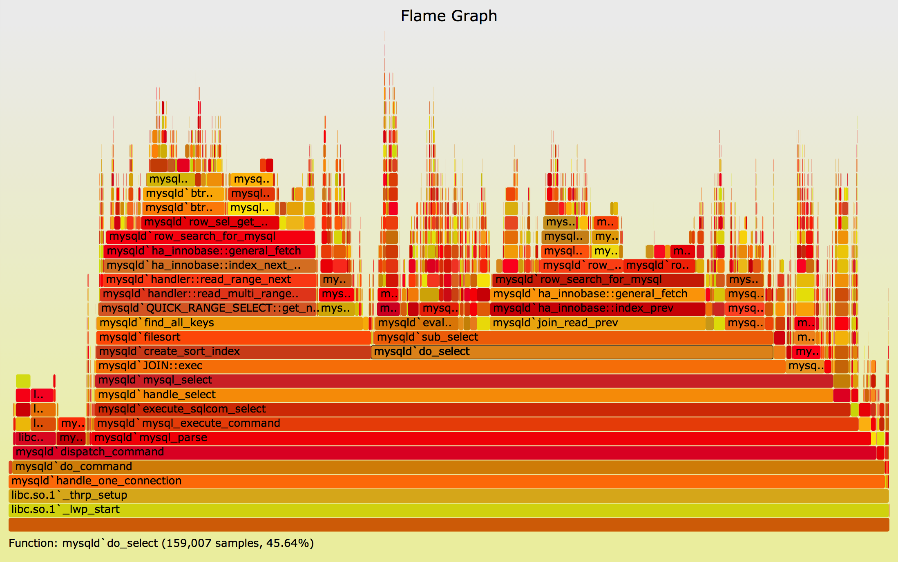

<html>
  <Head>
<meta http-equiv="Content-Type" content="text/html; charset=utf-8">

    
<link rel="stylesheet" href="../static/css/bootstrap.min.css"/>
<link rel="stylesheet" href="../static/css/bootstrap-theme.min.css"/>


    <link rel="stylesheet" href="../static/css/fonts/crmison.css"/>
    <link rel="stylesheet" href="../static/css/fonts/fira_code.css"/>
    <link rel="stylesheet" href="../static/css/fonts/ptsans.css"/>
    <link rel="stylesheet" href="../static/css/katex.min.css"/>
    <link rel="stylesheet" href="../static/css/wiki.css"/>
    <link rel="stylesheet" href="../static/css/codehilite.css"/>

    <script src="../static/js/jquery.min.js"></script>
    <script src="../static/js/bootstrap.bundle.min.js"></script>
    <script src="../static/js/katex.min.js"></script>
    
<link rel="stylesheet" href="../static/css/wiki.css"/>
<link rel="stylesheet" href="../static/css/slides.css"/>


    <title>动态程序分析</title>
  </Head>
  <body>
   
   
<textarea id="source">
public: True
class: center, middle

# 动态程序分析

蒋炎岩 <jyy@nju.edu.cn>

<div class="row justify-content-md-center">
  <div class="center author-block">
    <p><a href="http://www.nju.edu.cn/">南京大学</a></p>
    
  </div>
  <div class="center author-block">
    <p><a href="http://cs.nju.edu.cn/">计算机科学与技术系</a></p>
    
  </div>
  <div class="center author-block">
    <p><a href="http://ics.nju.edu.cn/">计算机软件研究所</a></p>
    
  </div>
</div>

---

# 本讲概述

> 程序的执行对程序员来说是非常直观的。动态程序分析就是通过执行程序、观测其行为从而得到程序各方面信息 (bugs、性能、需求实现情况等) 的程序分析技术

----

本讲概述

* 理解动态分析：调试器
* tracing 和 profiling
* 一些动态分析技术案例

---

class: center, middle

# 理解动态分析：调试器

---

# The GNU Project Debugger (GDB)

> GDB, the GNU Project debugger, allows you to see what is going on “inside” another program while it executes -- or what another program was doing at the moment it crashed.
> 
> GDB can do four main kinds of things (plus other things in support of these) to help you catch bugs in the act:
> 
> * Start your program, specifying anything that might affect its behavior.
> * Make your program stop on specified conditions.
> * Examine what has happened, when your program has stopped.
> * Change things in your program, so you can experiment with correcting the effects of one bug and go on to learn about another.

---

# GDB 命令


* 执行类 `r,c,f,s,si,...`
* 打印类 `p,x,i,bt...`
* 断点类 `b,hb,wa,...`
* 修改类 `set,...`
----


* gdb 内置 layouts
* gdb 命令可以由其他程序调用 (例如 vscode 插件)

---

# GDB: 实现

最重要的功能是.red[指令级的断点]

* 语句级断点：编译器提供语句到指令的对应 ([dwarf 标准](http://dwarfstd.org/))
* 单步调试：在下一条指令打上断点
* ...

----

一个直观的 hacking 方法

* 将断点处的指令替换为 `debug_trap()`，跳转后把原指令恢复
* x86 提供了 INT3 指令
    * `0xcc`，仅一个字节，专门用于调试
    * 其他 trap 指令都需要两个字节 `0xcd $trap`
* 但要求指令内存可写 (不可写时可借助硬件断点)

---

# INT3：不妨试一试

```c
int main() {
  asm volatile ("int $3");
}
```

----

```text
$ ./a.out
Trace/breakpoint trap (core dumped)
```

----

`ptrace` 系统调用可以将被追踪进程的 trap 通知追踪进程 (gdb)

* 如果单步 (`stepi`)，将会直接 “越过” `int $3`

---

# GDB: 不仅是调试器

它还是一个.red[协议]

* 以 packet 为单位传递数据
    * `?`: 错误信息; `D`: detach; `k`: kill; `X`: load binary
    * `c,C,s,S`: 执行/单步
    * `g,G,p,P,m,M`: 读写寄存器/内存
    * `qC,H`: 线程管理
    * `z,Z`: watch/breakpoints
* QEMU 就实现了这个协议 (处理器 = 线程)
----

有用的资料

* [GDB remote serial protocol](https://sourceware.org/gdb/onlinedocs/gdb/Remote-Protocol.html#Remote-Protocol)
* [Writing a RSP Server](https://www.embecosm.com/appnotes/ean4/embecosm-howto-rsp-server-ean4-issue-2.html#id3078847)
---

# 调试器：动态分析的概念基础

调试器能.red[提供动态分析所需的一切]

* 精确的程序执行流控制
    * `info inferiors`; `thread tid`
    * 能记录程序执行的每条指令
* 在程序运行过程中修改程序的状态
    * `set var = value`

----

当你试图理解动态分析技术时

* 想象动态分析就在 “调试” 程序就好了
* 本次课介绍的所有动态分析，都可以理解为调试器的封装

---

# 动态分析：总概述

调试器是好，但性能太差、记录太多

* 1000<math>\times</math> slowdown
* 换算到原程序执行，每秒几个 GiB 的指令 log
* 在日志上的 log 也会运行非常多时间

----

如何针对.red[特定软件工程问题]实现.blue[轻量级的记录]和.green[高效的分析算法]？

* 问题空间：分析什么？
* 设计空间：记录什么？怎样记录？怎样分析？

---

class: center, middle

# 动态分析: Tracing 和 Profiling

---

# 精简调试日志

我们并不需要指令级的完整 log
* 可以对调试信息做某一方面的精简！
* 大家思考.blue[怎样记录]、可以.green[做什么分析]

----

* profile 问题: 统计同一类代码的执行信息
    * 记录覆盖率 (执行与否)
    * 记录时间 (执行时间总和)
* trace 问题: 打印事件日志
    * 记录系统调用
    * 记录函数调用
    * 记录内存访问 (PA2)

---

# 例子：诊断性能问题

我的程序的性能尚不能满足要求

* 是系统某部分需要调优，还是我引入了性能 bug?
* 不要瞎猜！
    * premature optimization is the root of all evil (D. E. Knuth)
    * 让 profiler 告诉你 (gprof, perf/systemtap, VisualVM, ...)

.center[]

---

# An Interesting Debate

动态分析 (tracer/profiler) 虽然不改变程序的语义，但实际改变了程序的.red[运行时间]

* 本来存在的 bug，增加了 `printf` 就没有了
* 本来有性能问题的，profile 以后察觉不出来了
* 那动态分析还有用吗？？？

---

class: center, middle

# 动态分析技术：案例

---

# 回顾：动态分析设计

问题空间

* 分析什么性质？
    * follow 已有的工作
    * 开脑洞/经验/
    * 从实际中找新问题

----

设计空间

* 记录什么信息 (系统设计)
* 如何高效记录 (系统 hacking)
* 怎样进行分析 (算法设计)

---

# 程序理解/性质推导

Invariant Mining 

* [Daikon](https://plse.cs.washington.edu/daikon/)
* 与 “Bugs as deviant behavior” 的 insights 非常类似：我看到的是应该发生的；我看不到的是不应该发生的

----

在各种场合都很好用

* 一般程序
* CPS 程序
* 并发程序
* 分布式系统
* 开脑洞：.green[maybe smart contracts?]
---

# Bug 检测

我们已知一些 bug patterns，在[运行时检测就好了](https://github.com/google/sanitizers)

* AddressSanitizer (ASan)
    * use-after-free, use-after-return, stack/heap/buffer overflow 等内存问题
    * 本学期课程中包含了 ASan 的 ATC'12 论文
* ThreadSanitizer (TSan)
    * 检查数据竞争 (data race)
* UndefinedBehaviorSanitizer (UBSan)
    * 检查 (整数溢出、对象越界、溢出等一系列问题)

----

本质上，调试器都可以搞定

* 但 naive 的实现时间/空间消耗可能过大

---

# Bug 避免

在动态分析时，我们不仅可以.red[观测]，还可以.red[改变]程序的执行

* [reliable concurrency](https://dl.acm.org/citation.cfm?id=2522735)
    * 既然我们不能找到所有的并发 bug，那我们不让那些 “没见过” 的调度发生就好了


---

# Bug 恢复

Word 出 Bug 了，怎么办？

* 等一等
* 还不行？关掉再开
* 还不行？重启机器
* 还不行？重装 Word
* 还不行？重装系统！这总行了吧！

--
count: false
----

这体现了一种错误恢复的哲学：local rollback

* 本学期课程中包含了 micro-reboot
* 但还有很多有趣的工作实现错误恢复
    * txbegin/txend 快照 → setjmp/longjmp 快照 → fork 快照
</textarea>

<script src="../static/js/remark-latest.min.js"></script>

<script>
  var slideshow = remark.create();
</script>

    <script>
      $(function () {
        $('[data-toggle="tooltip"]').tooltip()
      })

      $("math").each(function() {
        var tex = $(this).text();
        var html = katex.renderToString(tex, {
          displayMode: $(this).attr('class') == 'block-math',
          throwOnError: false
        });
        $(this).replaceWith(html);
      });

      function get_token() {
        var match = document.cookie.match(new RegExp('(^| )token=([^;]+)'));
        if (match) return match[2];
        else return "";
      }

      var token = get_token();
      var hint = "token", box = $("#token-input");

      if (token == "") { box.val(hint); }
      else { box.val(token); }

      function login() {
        var token = box.val()
        document.cookie = 'token=' + token + '; expires=Fri, 31 Dec 9999 23:59:59 GMT;';
        if (token == '') {
          box.val(hint);
        }
      }
    </script>
  </body>
</html>